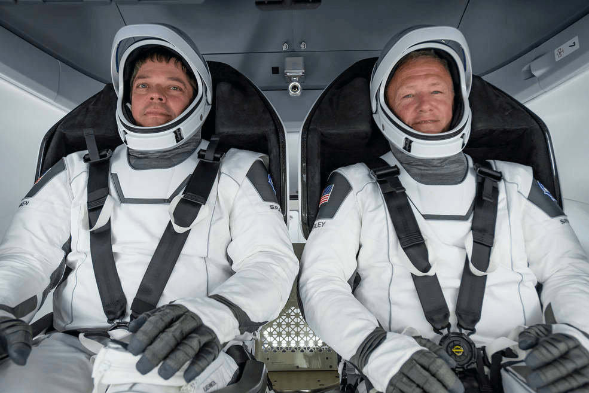

Why the SpaceX Launch was significant
Ramizah Tayiba. 8/9/2020

Astronauts Doug Hurley and Bob Behnken are inside the Crew Dragon Capsule. (TechEBlog)
Astronauts Doug Hurley and Bob Behnken are inside the Crew Dragon Capsule. (TechEBlog)
In the midst of a global crisis, SpaceX has launched a Falcon 9 rocket that carried two NASA astronauts to the International Space Station (ISS). Elon Musk’s space venture has led to this historic launch, which is filled with milestones and is a major step to get America back in the space race.
The launch took place on May. 30. This was a major achievement for SpaceX as it became the first private company to send astronauts to the ISS. Historically, government organizations have sponsored space missions. In addition to supplying the rocket and capsule (the Falcon 9 and the Crew Dragon Capsule), marking the beginning of commercial spaceflight.
Carrying humans to the ISS is the final test for SpaceX to get certified by NASA to fly regular missions to space.
The mission that has been called Demo-2 is the first to launch astronauts from American soil since 2011. The last launch was during the NASA Space Shuttle program, but it was decommissioned. Most launches usually take place in Russia or Kazakhstan on Soyuz rockets.
The spacecraft itself includes several new features. The capsule is over-engineered to withstand most catastrophes. Additional engines have been added in case of failures. For example, the capsule’s escape system is equipped with eight engines when it only requires four. Another key difference of this spacecraft is that it is controlled via touchscreen electronics rather than mechanical switches.
The mission itself looks quite different as well. To start it off, astronauts Bob Behnken and Doug Hurley will be in the capsule while it fuels, unlike usual where astronauts board after the spacecraft is fueled. After the liftoff, the rocket and capsule separates, and the Falcon 9 lands on a platform in the sea. This allows for the rocket to be reusable, lowering the cost of production. The capsule is then controlled manually by astronauts, before docking onto the ISS.
The return on August 2, 2020 was historic as well as it was the first splashdown (water landing) by American astronauts in forty-five years. The two astronauts then boarded a recovery ship where they were cared for by doctors and nurses.
This is a huge victory for American space travel as it provides a cheaper alternative to flying with Russia. NASA pays $86 million per astronaut with the Russians, while only paying $55 million with SpaceX.
This incredible milestone admisdt a global pandemic could point to the future of space exploration.
Cover Photo: (NASA)